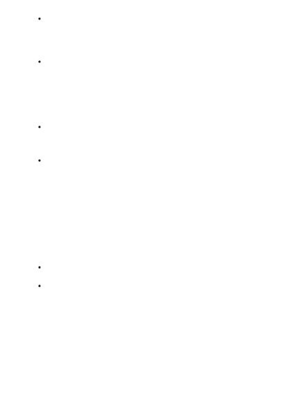

Define the scope and limitations of the model’s performance. Provide clear
instructions on how the model should respond when faced with any limitations.
For example, define how the model should respond if prompted on subjects or for
uses that are off topic or otherwise outside of what you want the system to do.
Define the posture and tone the model should exhibit in its responses.
When using the system message to define the model’s desired output format in your
scenario, consider and include the following types of information:
Define the language and syntax of the output format. If you want the output to
be machine parse-able, you may want the output to be in formats like JSON, XSON
or XML.
Define any styling or formatting preferences for better user or machine
readability. For example, you may want relevant parts of the response to be bolded
or citations to be in a specific format.
When using the system message to demonstrate the intended behavior of the model in
your scenario, it is helpful to provide specific examples. When providing examples,
consider the following:
Describe difficult use cases where the prompt is ambiguous or complicated, to give
the model additional visibility into how to approach such cases.
Show the potential “inner monologue” and chain-of-thought reasoning to better
inform the model on the steps it should take to achieve the desired outcomes.
When defining additional safety and behavioral guardrails, it’s helpful to first identify
and prioritize the harms you’d like to address. Depending on the application, the
sensitivity and severity of certain harms could be more important than others. Below,
we’ve outlined some system message templates that may help mitigate some of the
common harms that have been seen with LLMs, such as fabrication of content (that is
not grounded or relevant), jailbreaks, and manipulation.
Define the model's output format
Provide example(s) to demonstrate the
intended behavior of the model
Define additional behavioral guardrails